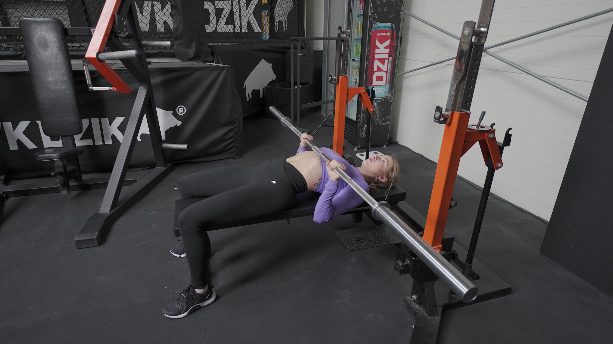
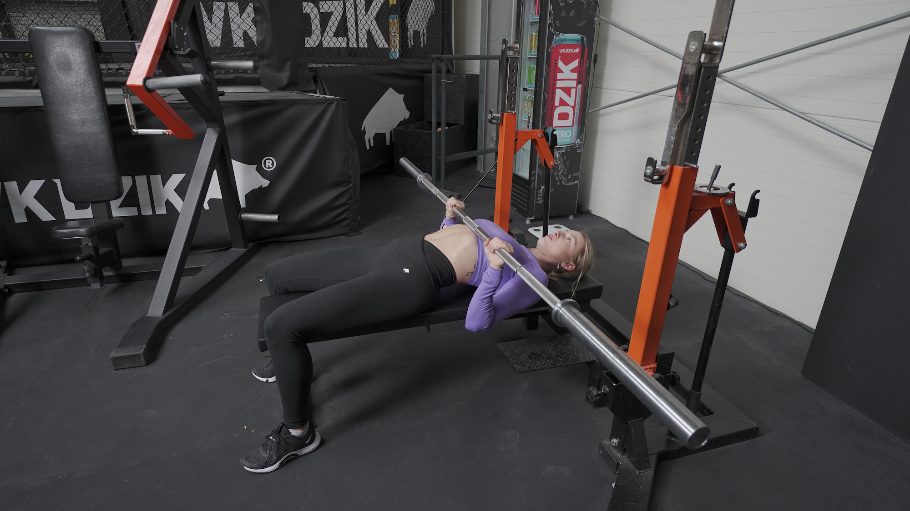

WYCISKANIE SZTANGI WĄSKO
 

1. Połóż się na ławce poziomej.
2. Złap sztangę na szerokość swoich barków lub nieco węziej.
3. Zrób delikatny mostek (oderwij odcinek lędźwiowy od ławeczki).
4. Mocno zepnij łopatki i ułóż je stabilnie na ławce.
5. Stopy rozstaw po bokach ławeczki i mocno wbij je w podłoże.
6. Wyciągnij sztangę ze stojaków i przenieś nad swoją głowę.
7. Wykonaj rotację ramienia (ruch, jakbyś chciała złamać sztangę na pół).
8. Rozpocznij ruch opuszczania sztangi, kierując łokcie jak najbliżej ciała.
9. Gdy sztanga dotknie okolic mostka, rozpocznij ruch wyciskania jej z powrotem nad głowę.